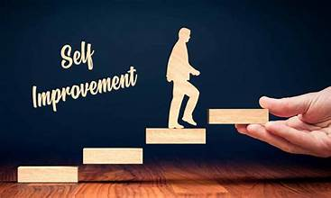
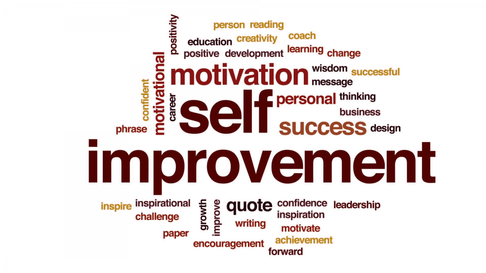
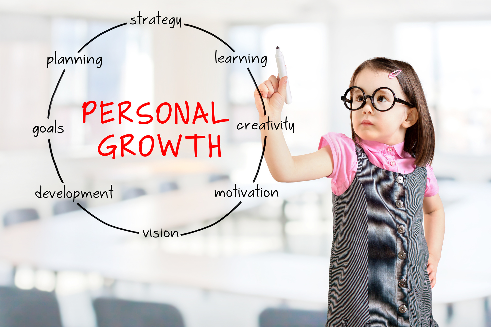
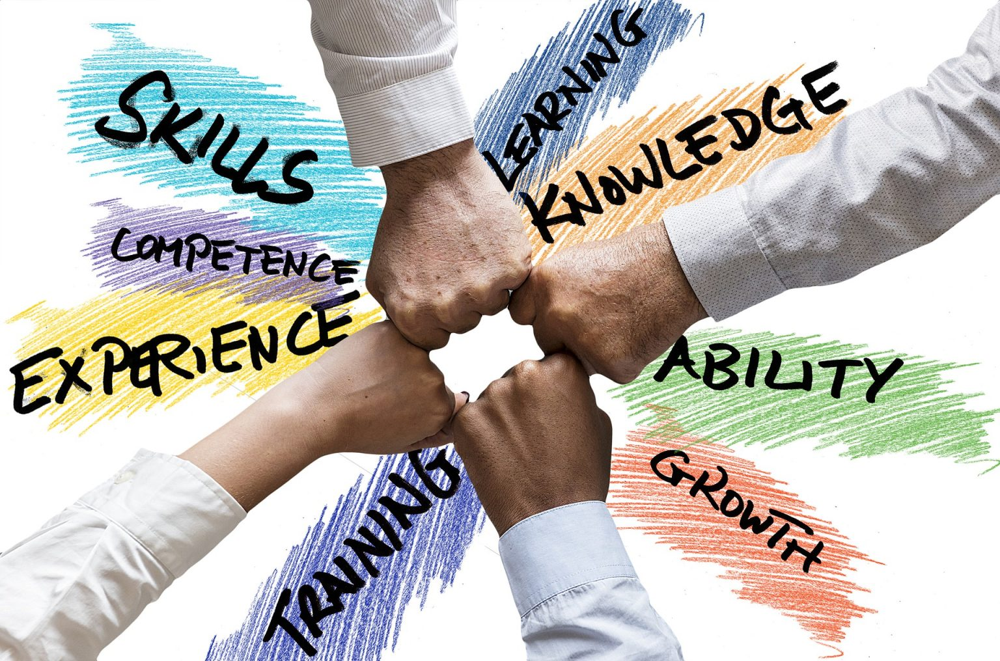

Education and self-improvement are intertwined, serving as fundamental pillars of personal and professional development. Education, whether formal or informal, equips individuals with knowledge, skills, and critical thinking abilities that expand their horizons and enhance their problem-solving capabilities. It empowers individuals to understand the world around them, make informed decisions, and adapt to an ever-changing landscape. In parallel, self-improvement is a lifelong commitment to personal growth and enhancement. It involves setting goals, seeking self-awareness, and continually striving to be the best version of oneself. Through self-improvement, individuals refine their character, build resilience, and cultivate essential life skills, such as time management, emotional intelligence, and communication. The pursuit of both education and self-improvement is a transformative journey that not only opens doors to opportunities but also enriches lives, fosters creativity, and empowers individuals to make a positive impact on their communities and the world. Together, they create a path toward personal fulfillment and a more prosperous and meaningful existence.

Education is the structured process of acquiring knowledge and skills from various sources, including schools, universities, books, and online resources. It provides a foundation upon which individuals can build their careers and make informed decisions. A well-rounded education broadens one's perspective, instills a love for learning, and fosters curiosity. It encourages critical thinking, problem-solving, and the ability to adapt to new challenges. Furthermore, education often plays a significant role in shaping one's career prospects and financial stability, making it an essential factor in social and economic mobility.

Self-improvement, on the other hand, is the proactive pursuit of personal growth and development beyond formal education. It involves setting personal and professional goals, seeking continuous self-assessment, and taking deliberate actions to enhance one's abilities and character. Self-improvement encompasses a wide range of activities, from learning new skills and improving existing ones to developing emotional intelligence, building healthy habits, and fostering a growth mindset. It empowers individuals to take charge of their personal development, fostering self-confidence and resilience in the face of adversity.

Together, education and self-improvement create a powerful synergy. Education provides the foundational knowledge, while self-improvement refines and expands upon it. The pursuit of both enables individuals to become lifelong learners, capable of adapting to an ever-evolving world, realizing their full potential, and making meaningful contributions to society. In essence, education and self-improvement are not endpoints but rather continuous journeys that lead to personal and societal advancement.
